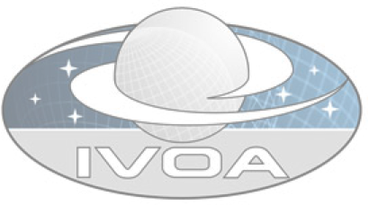

An Extensible, Open-Source VOSpace Server (Eventually)
Rick Wagner

Why PHP?
- I really didn't want to run an application server (Java or Python), just Apache
- There isn't a Python client library for iRODS, anyways (Python fanboy warning)
- However, Sifang Lu at SDSC has written a pure-PHP iRODS client
- PHP is very easy to deploy
- PHP5 has built-in support for SOAP servers and clients
- A pure-PHP SRB client is possible
Design
- I really didn't want to run an application server (Java or Python), just Apache
- There isn't a Python client library for iRODS, anyways (Python fanboy warning)
- However, Sifang Lu at SDSC has written a pure-PHP iRODS client
- PHP is very easy to deploy
- PHP5 has built-in support for SOAP servers and clients
Volute
- I really didn't want to run an application server (Java or Python), just Apache
- There isn't a Python client library for iRODS, anyways (Python fanboy warning)
- However, Sifang Lu at SDSC has written a pure-PHP iRODS client
- PHP is very easy to deploy
- PHP5 has built-in support for SOAP servers and clients
Summary & Requests
- Not a high-priority item for me (i.e., months not weeks)
- Help is welcomed
- Could really use some clients for testing